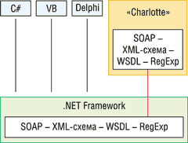

Алексей Федоров
В конце мая в Анахейме (шт. Калифорния, США) компания Borland (http://www.borland.com, http://info.borland.ru) провела очередную, 13-ю конференцию разработчиков - BorCon.
Borland хорошо известна в нашей стране - в первую очередь благодаря Delphi, чрезвычайно популярному средству для создания приложений на языке Object Pascal. Не меньшей популярностью пользуются и такие средства разработки, как Borland C++ Builder и JBuilder. Разработчики, ориентирующиеся на платформу Linux, несомненно, знакомы с Kylix - версией Delphi для ОС Linux. В силу ряда причин менее известны продукты фирмы, рассчитанные на корпоративных пользователей, - средства разработчика из семейства Enterprise Studio (Borland Enterprise Studio for Java, Borland Enterprise Studio for Windows), сервер приложений Borland Enterprise Server, встраиваемая СУБД JDataStore, продукты для коллективной разработки приложений - Borland TeamSource Development Services Platform, а также продукты для создания приложений для мобильных клиентов.
В настоящее время Borland обеспечивает поддержку всех ведущих платформ - Microsoft Windows, Microsoft .NET и Web-служб, Java, Linux, а также основных языков программирования - Delphi, C++ и Java. Компания активно участвует в работе основных комитетов, определяющих нынешние и будущие стандарты, - Web Services Interoperability Organization (WS-I) и Java Community Process (JCP). Партнерство с такими компаниями, как Microsoft, IBM, Intel, Nokia, Ericsson, Oracle и Hewlett-Packard, позволяет клиентам применять технологии компании на различных платформах и в различных средах.
Будучи, по выражению президента компании Дейла Фуллера, "Швейцарией на рынке средств разработки", Borland тем не менее практически единственная компания в отрасли, заканчивающая третий год подряд с прибылью, которая характеризуется следующими цифрами: 174,8 млн долл. в 1999 г., 191,1 млн долл. в 2000 г. и 221,8 млн долл. в 2001 г.
Показательно и то, что компания не удовлетворяется занимаемой нишей и активно расширяет сферу своего влияния. Как станет ясно из дальнейшего изложения, цель Borland - поддержка всех популярных платформ, СУБД, серверов приложений и корпоративных технологий. Может показаться, что для компании с численностью сотрудников чуть более 1500 такая задача непосильна, но из этих 1500 человек более 400 заняты непосредственно исследованиями и разработкой - вряд ли многие компании могут похвастаться таким соотношением.
Итак, каковы же перспективы для разработчиков, обсуждавшиеся на конференции BorCon 2002?
Delphi
В ближайшее время планируется выпуск новой версии Delphi 7, в которой будет реализован ряд новых расширений языка и некоторые новые возможности поддержки создания Windows-приложений. Delphi 7 станет первым продуктом фирмы, который обеспечит миграцию на платформу .NET - в компиляторе будут реализованы новые подсказки и предупреждения, которые помогут разработчикам писать переносимый код; кроме того, в языке появится ряд новых расширений, рассчитанных на поддержку как Windows-, так и .NET-приложений. В комплект поставки Delphi 7 войдет предварительная версия Delphi for .NET - Delphi for .NET Preview Edition. В ее составе будет пакетный компилятор DCCIL (Delphi Command Line Compiler for Intermediate Language) и VCL for .NET. Полноценная версия Delphi for .NET увидит свет только в середине следующего года. Среди новинок, которые появятся в Delphi 7, можно отметить расширенную поддержку поиска и публикации Web-служб, а также DBExpress-драйвер для Microsoft SQL Server.
На конференции была представлена базовая информация о том, какие новинки ожидают программистов в Delphi for .NET. Так, в версии для .NET появится поддержка пространств имен (namespaces), вложенных типов, атрибутов, определяемых программистами, данных, свойств и статических методов класса. Можно будет создавать события с более чем одним обработчиком (multicast events), динамически подключать и отключать обработчики событий, создавать записи с методами, наследовать записи, выполнять преобразования примитивных типов в объекты и обратно (Boxing/Unboxing). Станут возможны также перегрузка свойств массивов, создание ненаследуемых классов (Sealed classes) и реализация метода Final, который позволит выполнить завершающие действия перед сборкой мусора.
Естественно, что Delphi for .NET будет полностью соответствовать спецификации Common Language Specification (CLS); как следствие, не будут поддерживаться некоторые из имеющихся сегодня возможностей языка. Так, в Delphi for .NET не будет выражения @Addr(), директивы Absolute, поддержки типа Real48 (6-байтовые числа с плавающей точкой), возможности создавать типизованные файлы (ключевое слово File of Пока еще не определена судьба некоторых конструкций языка: виртуальных конструкторов; виртуальных вызовов из методов классов и методов, вызываемых непосредственно после выполнения конструктора или непосредственно перед выполнением деструктора; поддержки таких типов, как PChar и Variant.
В Delphi for .NET планируется реализовать максимальную совместимость с кодом, написанным для Delphi for Windows.
В состав Delphi for .NET войдут .NET-версии основных библиотек классов: VCL for .NET, DataSnap Direct for .NET, DataSnap BDE Local for .NET и DataSnap Middleware (ранее MIDAS) for .NET. При создании приложений можно будет использовать как классы, реализованные в VCL for .NET, так и классы из пространства имен System.Windows.Forms. Поддержка работы с базами реализуется либо через DataSnap, либо через ADO.NET - для этого Borland создала набор драйверов для всех СУБД, поддерживаемых в DBExpress (Interbase, Oracle, DB2, MySQL и Informix).
По данным исследовательской компании IDC (http://www.idc.com),
в 2001 г. в мире насчитывалось более 2,6 млн разработчиков на языке С++. Предлагаемое
компанией Borland средство разработки на этом языке, Borland C++ Builder, занимает
17% рынка средств разработки на C++. Новая версия продукта Borland C++ Builder
6 вышла в феврале этого года - с ее помощью программисты на C++ могут создавать
Web-службы. Планируемый Borland цикл обновления версий продуктов составляет
18 месяцев, поэтому говорить о следующей версии продукта еще рано. Тем не менее
две активно обсуждавшиеся на конференции темы имеют непосредственное отношение
к языку C++.
Во-первых, Borland активно работает над новой архитектурой компилятора языка C++, который будет состоять из трех модулей - так называемого Front End-процессора, оптимизатора SSA (Static Single Assignment) и генератора объектного кода. Предполагается, что можно будет использовать различные описания входного языка (не только С++) на уровне Front End-процессора, а также заменять модули генератора объектного кода, чтобы генерировать код для различных типов процессоров - архитектуры Intel, ARM и т. п. Второе станет возможным благодаря использованию описателей процессоров и их наборов инструкций, на которых будет базироваться кодогенератор.
Упоминание процессора ARM не случайно. В ближайшее время Borland планирует выпустить дополнение к Borland C++ Builder, позволяющее создавать мобильные приложения для платформы Symbian. В первой версии продукта под названием C++ Builder for MobileSet будет реализована поддержка Nokia SDK for the Series 60 (7650), средства создания проектов, приложений и библиотек для платформы Symbian. C++ Builder for MobileSet 1.0 планируется выпустить в середине этого года или в III квартале. В версии C++ Builder for MobileSet 2.0 предполагается использовать новую среду разработчика, новый компилятор Borland ARM C++ Compiler, библиотеку классов Mobile CLX, расширить набор поддерживаемых моделей телефонов и реализовать так называемые виртуальные телефоны, что позволит создавать и отлаживать мобильные приложения с использованием эмуляторов.
По данным компании IDC, к 2003 г. число разработчиков на Java увеличится до 4,3 млн чел. по сравнению с 1,3 млн в 2001 г. Предлагаемое Borland средство разработки на языке Java, JBuilder занимает порядка 40% рынка и неоднократно признавалось лучшей интегрированной средой разработки такими авторитетными изданиями, как Software Development, JavaWorld и JavaPro. Продажи JBuilder за 2001 г. возросли на 51%. Объявленная на конференции новая версия JBuilder 7 поставляется в трех вариантах - Enterprise, Standard Edition и Personal Edition и включает OptimizeIt Code Coverage. Помимо этого, разработчикам на языке Java предлагается Borland Enterprise Studio 4 for Java - набор приложений, включающий Borland Enterprise Server, OptimizeIt Suite 4.2, Rational Rose Professional J 2002 Edition, Rational Unified Process 2002, Macromedia Dreamweaver MX.
Набор средств для оптимизации Java-приложений OptimizeIt Suite 4.2 базируется на продукте VMGear (Redline Software), приобретенном Borland в январе этого года, и включает в себя три базовых компонента - Profiler, Thread Debugger, Code Coverage.
В JBuilder 7 реализована поддержка самых новых Java-стандартов (включая JDK 1.4), Web-служб и создания приложений для мобильных устройств (JBuilder Mobile Set). Поддерживаются различные платформы и многие серверы приложений, включая BEA WebLogic, IBM WebSphere, Sun iPlanet, и, разумеется, собственный сервер приложений компании - Borland Enterprise Server.
Kylix, средство разработки приложений для Linux, считается общепризнанным фаворитом среди разработчиков. Занимая более 12% рынка, Kylix опережает такие продукты, как Metrowerks Codewarriot, GNUPro Toolkit и C-Forge-Code Forge. Помимо того, что Kylix предоставляет удобную среду разработчика и обширную библиотеку классов, это первое средство, позволяющее создавать Web-службы на платформе Linux.
В версии Kylix 3, которая должна увидеть свет в этом году, предполагается реализовать две среды разработчика - для Delphi и для С++. Эти среды можно рассматривать как Linux-версии соответственно Delphi 6 и C++Builder 6. Никаких подробностей о новинках в Kylix 3 пока не сообщалось, поэтому трудно судить, что ждет разработчиков в новой версии.
Скажем еще несколько слов о двух продуктах, которые увидят свет не ранее следующего года. Первый из них представляет собой среду разработки для платформы .NET и условно называется .NET Development Studio. Второй продукт предназначен исключительно для создания Web-служб.
Планируемый срок выпуска .NET Development Studio - 2003 г. Этот продукт рассчитан на корпоративных разработчиков, создающих приложения для гетерогенных сред. Базируясь на платформе .NET и Microsoft .NET Framework, он будет поддерживать все популярные языки программирования, включая Delphi for .NET, и генерацию MSIL-кода, но, в отличие от Microsoft Visual Studio .NET, позволит применять различные модели распределенных объектов, включая COM, SOAP и CORBA, внедрять создаваемые приложения на Web-серверы Microsoft IIS и Apache, а также работать с различными базами данных - Microsoft SQL Server (через ADO.NET), Oracle, DB2, Interbase и рядом других (обращаясь к ним напрямую).
На рис. 1 показана концептуальная схема, иллюстрирующая цель создания .NET Development Studio (компоненты, поддерживаемые в Microsoft Visual Studio .NET, выделены темным фоном).
Для разработки Web-служб предполагается выпустить специальное средство, которое будет базироваться на простом, но мощном языке программирования, создаваемом Borland специально для этой цели. Как известно, для создания Web-служб на платформе .NET можно использовать такие языки программирования, как C#, VB.NET, а в скором времени и Delphi for .NET. Но проблема заключается в том, что в этом случае необходимо использовать классы, реализованные в библиотеке классов Microsoft .NET Framework, и выполнять преобразования типов для достижения соответствия между типами, поддерживаемыми на уровне Common Language Runtime, и типами, используемыми в Web-службах (эти типы описаны в спецификации XSD - XML Schema Definition). Задача нового средства, разрабатываемого Borland, - реализация всех возможностей Web-cлужб на уровне языка программирования. Идеологию этого средства иллюстрирует рис. 2.
В языке будет поддерживаться соглашение о вызовах на уровне спецификации WSDL (Web Services Description Language), все методы будут удаленными, будет включена поддержка регулярных выражений (Regular Expressions), все типы данных будут соответствовать типам, описанным в XML Schema Definition. В дальнейшем планируется реализовать поддержку не только протокола SOAP и платформы .NET, но также CORBA и других технологий удаленных вызовов методов, реализовать автоматическое преобразование вызовов для выбранной платформы и автоматическую поддержку возможностей той или иной платформы. Например, при наличии менеджера сессий для той или иной платформы он будет использоваться автоматически - достаточно лишь указать в коде, что необходима поддержка сессии.
Ниже приведен пример того, как будет выглядеть синтаксис для объявления удаленных объектов, методов и элементов.
И последняя новость - известный большинству разработчиков Web-узел Borland
Community (http://community.borland.com)
теперь называется Borland Developer Network.
C++
Java
Linux
.NET Development Studio

Рис. 1. Принципиальная схема .NET Development Studio.

Рис. 2. Схема нового средства создания Web-служб, разрабатываемого Borland.
remote class MyServices is
remote method Add(X as Integer, Y as Integer) as Integer is
return X+Y
remote method GetData(Date as DateTime) as Integer is
local adapter = new System.Data.Sql.Adapter(
"SELECT * FROM Orders WHERE Date = " + Date,
"Provider=Microsoft.Jet.OleDb.4.0;Data Source=data.mdb")
local result = new DataSet()
adapter.Fill(result)
return result
element Contact is
property name as String
property address as String
property phone as String
remote class HitCounter is
remote method GetHitCount() as Integer is
SessionHitCount += 1
return SessionHitCount